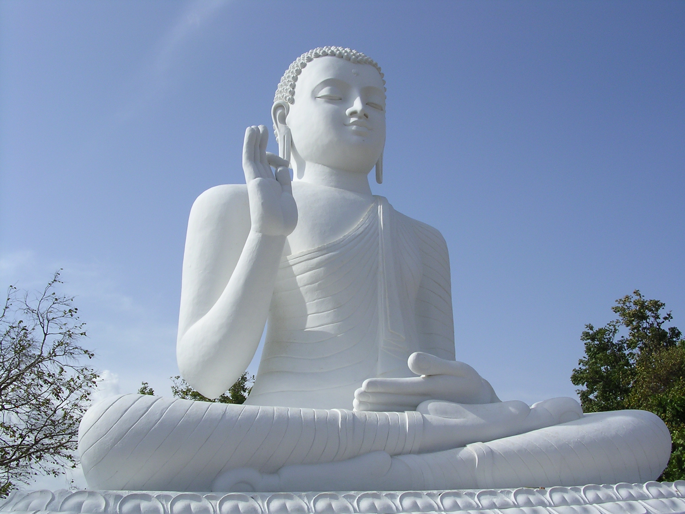
The Buddha at Mihintale, Sri Lanka.JPG
Ranabolt at English Wikipedia · Public domain
Captured: 16 February 2007 (original upload date)
Original source and attribution
Original licensed photographs and cached maps. These are references, not a complete photogrammetry set. Some photographs are historical. The hospital is outside the current scene bounds.
Sources and licences · Core-area plan · Map GeoJSON · Landmark positions · Terrain provenance · Editable Buddha GLB

Ranabolt at English Wikipedia · Public domain
Captured: 16 February 2007 (original upload date)
Original source and attribution
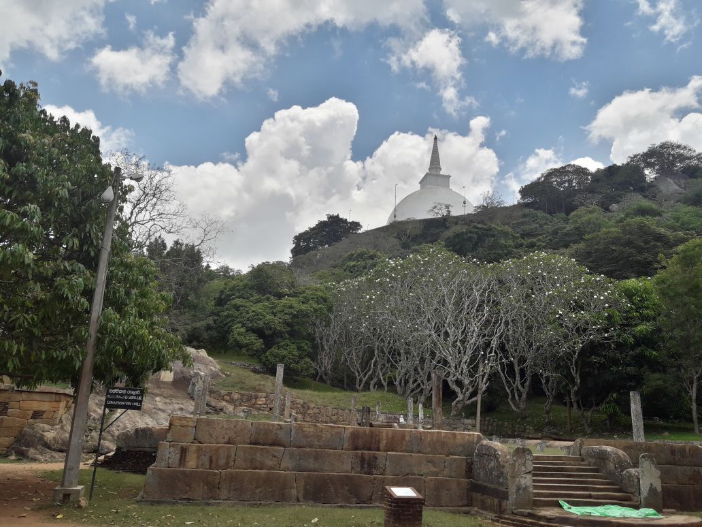
Yasasuru · CC BY-SA 4.0
Captured: 2018-03-18
Original source and attribution
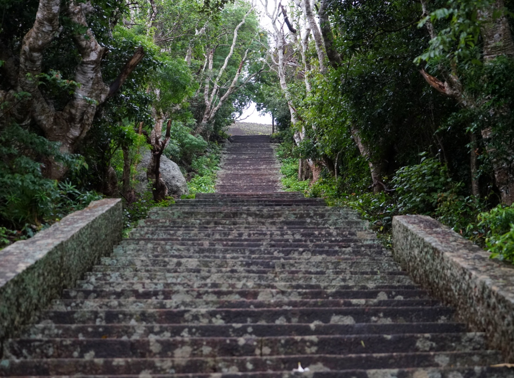
Hesandu Uyangoda · CC BY-SA 4.0
Captured: 2019-12-25 15:08:49
Original source and attribution
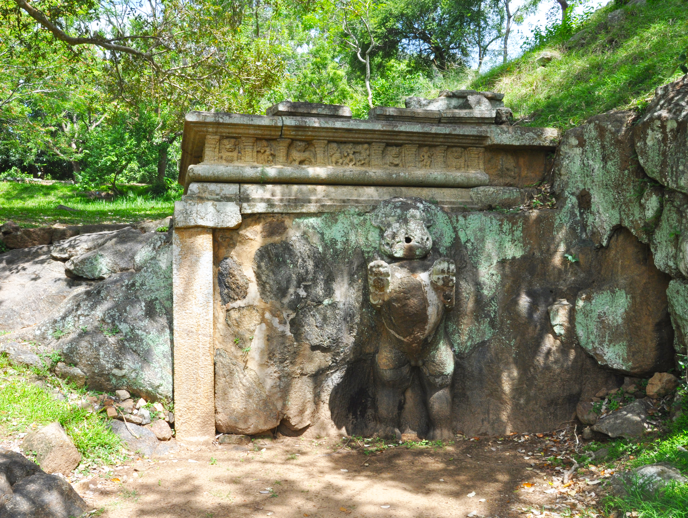
Prof Ranga Sai · CC BY-SA 4.0
Captured: 2010-08-16 13:53:06
Original source and attribution
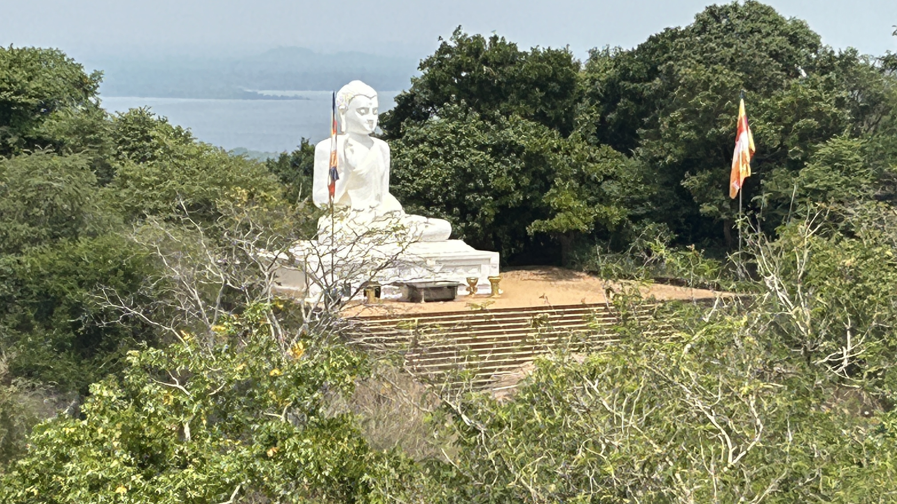
Uviein · CC BY-SA 4.0
Captured: 2024-03-01 12:38:54
Original source and attribution
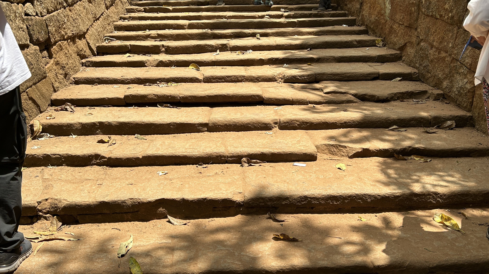
Uviein · CC BY-SA 4.0
Captured: 2024-03-01 12:02:22
Original source and attribution
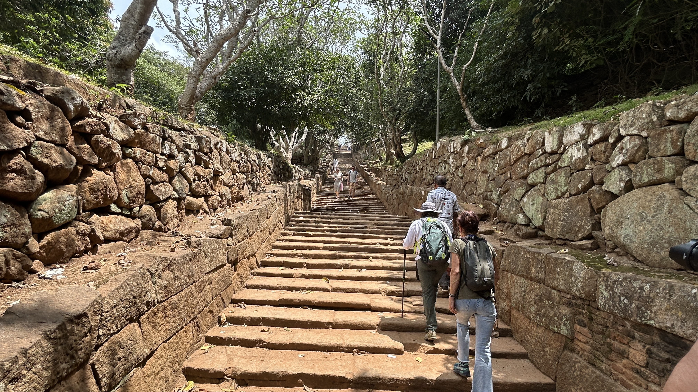
Uviein · CC BY-SA 4.0
Captured: 2024-03-01 12:02:10
Original source and attribution
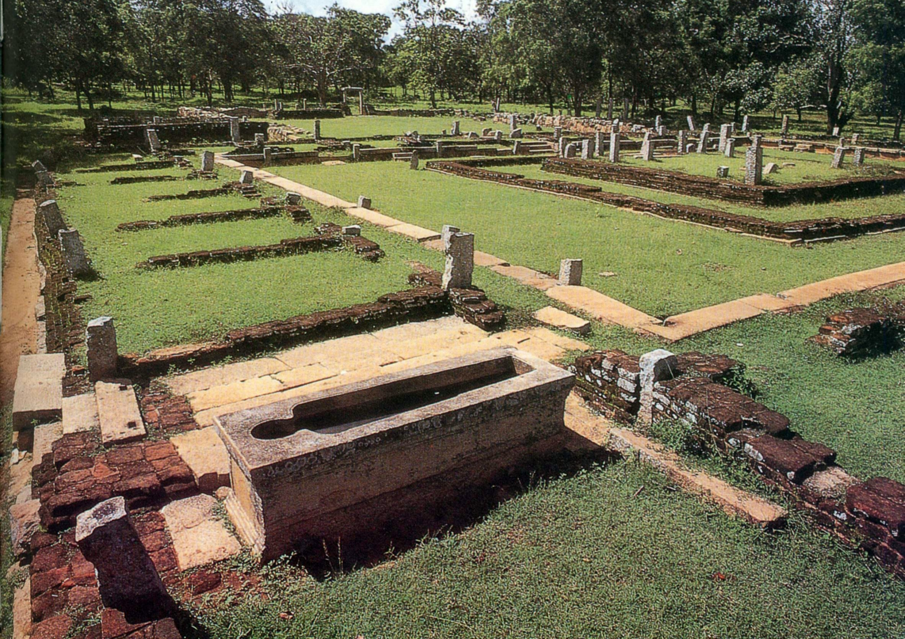
RMASRathnayaka · CC0
Captured: 2026-06-25
Original source and attribution
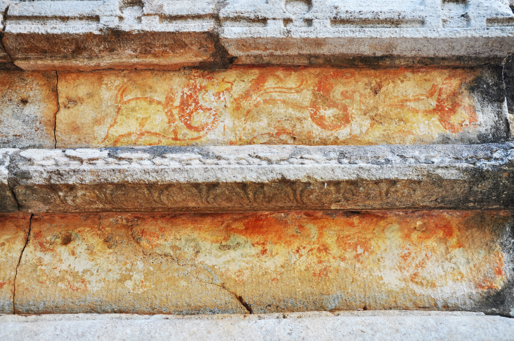
Prof Ranga Sai · CC BY-SA 4.0
Captured: 2010-08-16 14:42:58
Original source and attribution
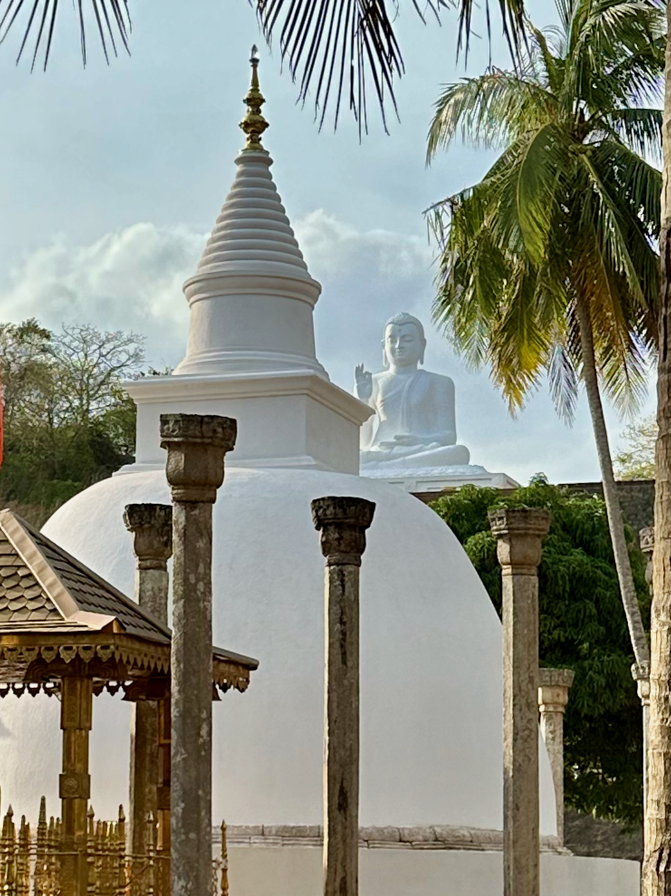
Josep Renalias Lohen11 · CC BY 4.0
Captured: 2023-07-12 16:51:28
Original source and attribution
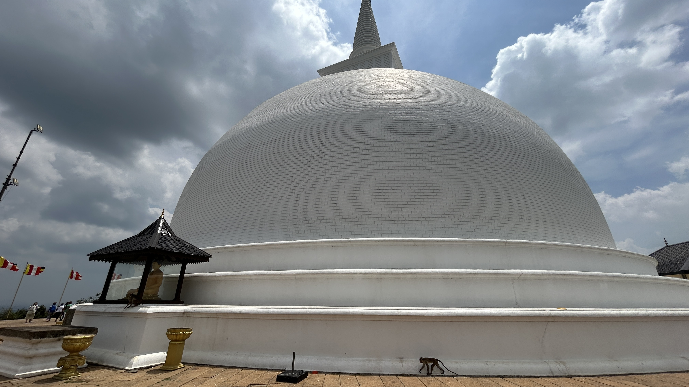
Uviein · CC BY-SA 4.0
Captured: 2024-03-01 12:31:52
Original source and attribution